Lab 6: Correlation and Regression
Fabio Setti
PSYC 6802 - Introduction to Psychology Statistics
Today’s Packages and Data 🤗
The psych package (Revelle, 2024) includes MANY functions that help with data exploration and running analyses typically done in the social sciences. It is particluarly useful for exploratory factor analyses.
The carData package (Fox et al., 2022) contains many datasets. Most of these datasets are used in the book titled an R Companion to Applied Regression.
Association Between Variables
When look at scatterplots, we can intuitively spot associations between two variables.
If we plot eduaction and prestige, we can tell that there is some sort of trend; as the values of one variable increase, the values of the other variable also increase.

Covariance
The most basic measure of association between two continuous cariables is the covariance. The sign of the covaraince describes the direction of the relation between two variables:
We can use cov() to calculate the covariance between education and prestige:
The covariance is positive so we know that as one variable increases or decreases, so does the other variable. In this case, the higher the average years of education of individuals in a profession, the higher the perceived prestige of that profession.
When Comparisons are meaningless
On the previous slide we saw that the first covariance was around \(39.9\) and the second covariance was around \(-59411.38\). Does this mean that the second relationship is much stronger than the first one? Absolutely not. The values of covariances cannot be compared when variables are measured on different scales. The formula for the covariance is:
\[S_{xy} = \frac{\sum (x_i - \bar{x}) \times (y_i - \bar{y})}{n - 1}\]
The raw covariance values are meaningless because the income variable is measured on a scale that is much larger than either education or prestige.
If you look at the formula for \(S_{xy}\), when income is involved, you can expect the result to be quite large.
Asking which covariance is larger is essentially the same as asking whether 84 degrees Fahrenheit is larger than 30 degrees Celsius.
Actually what would you do to answer the question in the line above? 🤔
Changing Variable Scales: Standardization
To compare measurements on different scales (Fahrenheit VS Celsius), we need to transform one of them, such that they are on the same scale. We have briefly talked about Z-scores in Lab 4. Turning variables into Z-scores is known as standardizing and it is just a convenient way of rescaling variables such that they are all on the same scale. For any variable \(X\):
\[z_i = \frac{x_i - \bar{x}}{S_x}\]
The Steps Graphically
The important point is that standardizing does not change the shape of the distribution of a variable, it just moves it and resizes it. let’s look at what happens step by step when we standardize education:
Plot Code
ggplot(dat, aes(x = education)) +
geom_density(aes(color = "Raw")) +
xlim(c(-10, 20)) +
scale_y_continuous(expand = c(0,0)) +
scale_color_manual(
values = c("Raw" = "blue"),
name = "",
labels = c( "Raw" = expression(x[i]))) +
theme(
axis.title.y = element_blank(),
axis.text.y = element_blank(),
axis.ticks.y = element_blank(),
axis.line.y = element_blank())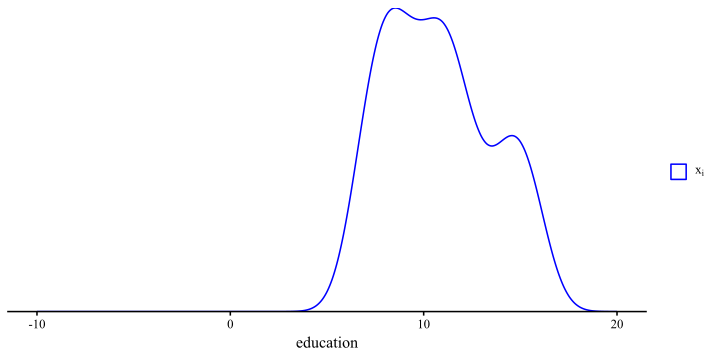
The blue density is the original education variable and it represents the average years of education for each of the 102 occupations in the data.
This is the \(x_i\) part of the formula
\[z_i = \frac{x_i - \bar{x}}{S_x}\]
Plot Code
ggplot(dat, aes(x = education)) +
geom_density(aes(color = "Raw")) +
geom_density(aes(x = education - mean(dat$education), color = "Centered")) +
xlim(c(-10, 20)) +
scale_y_continuous(expand = c(0,0)) +
scale_color_manual(
values = c("Raw" = "blue",
"Centered" = "red"),
name = "",
labels = c(
"Raw" = expression(x[i]),
"Centered" = expression(x[i] - bar(x)))) +
theme(
axis.title.y = element_blank(),
axis.text.y = element_blank(),
axis.ticks.y = element_blank(),
axis.line.y = element_blank())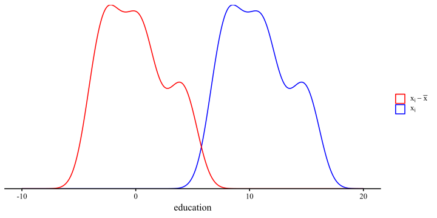
The red density is the education variable after we subtract its mean from all the values. So the red density represents the the \(x_i - \bar{x}\) part of \(z_i = \frac{x_i - \bar{x}}{S_x}\).
This is known as mean centering, and it comes up in moderation anlyses to get easier interpretations.
Plot Code
ggplot(dat, aes(x = education)) +
geom_density(aes(color = "Raw")) +
geom_density(aes(x = education - mean(dat$education), color = "Centered")) +
geom_density(aes(x = (education - mean(dat$education)) / sd(dat$education),
color = "Standardized")) +
xlim(c(-10, 20)) +
scale_y_continuous(expand = c(0,0)) +
scale_color_manual(
values = c("Raw" = "blue",
"Centered" = "red",
"Standardized" = "purple"),
name = "",
labels = c(
"Raw" = expression(x[i]),
"Centered" = expression(x[i] - bar(x)),
"Standardized" = expression((x[i] - bar(x)) / S[x])
)
) +
theme(
axis.title.y = element_blank(),
axis.text.y = element_blank(),
axis.ticks.y = element_blank(),
axis.line.y = element_blank())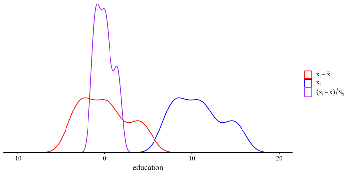
The purple density is \(z_i = \frac{x_i - \bar{x}}{S_x}\). Dividing by the SD “squishes” the distribution, but the shape does not change! The important implication is that standardizing does not change the relation between variables.
Note that there is nothing special about mean = 0 and SD = 1. You could add any value and that will become the new mean. Having a mean of 0 and an SD of 1 usually makes things easier.
Covariance With standardized Variables?
Let’s standardize the variables from before, compute the covariance again and see what happens:
While originally the covariance between women and income had a much larger number, once the variables are standardized, the relation between education and prestige has the larger number.
The numbers in the right column are the correlation coefficient between the variables and are definitely what we should look at when determining how strong a relation is.
It was the Correlation all Along
You don’t hear about covariance very often because it is not interpretable, as its value depend on the scale of the original variables. The correlation, denoted with \(r\), is the standardized covariance and has the benefit of always being between -1 and 1.
we can compute the correlation between two variables with the cor() function:
\(r = 0\): a correlation of 0 exactly means that there is no linear association between two variables.
\(r > 0\): a correlation above 0 means that there is a positive linear association between two variables.
\(r < 0\): a correlation below 0 means that there is a negative linear association between two variables.
So, there is a strong positive relation between education need for a certain occupation and the perceived prestige of that occupation.
Likewise, there is a fairly noticeable negative relation between the average income by profession and the percentage of women practicing that profession.
Significance Test for Correlation
The cor() function does not provide any p-value. We need to use the corTest() function from the psych package for that. Here is the example for the correaltion between education and prestige:
Call:psych::corTest(x = dat$education, y = dat$prestige)
Correlation matrix
[1] 0.85
Sample Size
[1] 102
These are the unadjusted probability values.
The probability values adjusted for multiple tests are in the p.adj object.
[1] 0
To see confidence intervals of the correlations, print with the short=FALSE optionLots of text! But if we take a closer look it should be fairly straightforward:
The correlation, \(r = .85\), is below the
Correlation matrixline.The sample size, \(n = 102\), is also returned.
The p-value is the last number displayed. Here it’s so small that the function just rounds to 0, so, \(p < .001\).
The last line of the output tells us that if we want the 95% CI for the correlation coefficient, we can get that by adding the short=FALSE argument to the corTest() function.
Correlation matrices
Correlation matrices are square tables that summarize the correlation between a set of variables.
Here is the correlation matrix among the first 4 variables in the the data:
education income women prestige
education 1.00000000 0.5775802 0.06185286 0.8501769
income 0.57758023 1.0000000 -0.44105927 0.7149057
women 0.06185286 -0.4410593 1.00000000 -0.1183342
prestige 0.85017689 0.7149057 -0.11833419 1.0000000Each cell is the correlation between the variables in the row and column. Notice that the matrix is symmetric, meaning that the values in the top and bottom triangle are the same. This is because \(\mathrm{cor(x, y)} = \mathrm{cor(y, x)}\).
Why would the diagonal be all 1s?
You can get the equivalent with the corTest() function, but I suggest you do this:
education income women prestige
education 1.00000000 0.5775802 0.06185286 0.8501769
income 0.57758023 1.0000000 -0.44105927 0.7149057
women 0.06185286 -0.4410593 1.00000000 -0.1183342
prestige 0.85017689 0.7149057 -0.11833419 1.0000000Notice how we are extracrting the r element from the cor_mat object that we created. The r element is the correlation matrix, but there’s much more information inside cor_mat.
Contents of CorTest()
When reporting results you will usually need to also report the significance tests (see this slide N for APA style resources) and other information. Let’s look at the names of the elements inside cor_mat:
[1] "r" "n" "t" "p" "p.adj" "se" "sef" "adjust"
[9] "sym" "ci" "ci2" "ci.adj" "stars" "Call" The ci element gives a neater output and also the CIs and p-values!
To find out what all the elements are, look under the value section of the corTest() help menu.
Linear Regression
Onto what is probably the most important analysis in statistics, linear regression. On slide 2 we showed the scatterplot between education and prestige, and saw a noticeable trend.
A regression line captures the linear trend between two variables.
More importantly, the regression line has a very simple mathematical form,
\[y = b_0 + b_1 \times x\]
In the case of this graph, we would write:
\[\mathrm{prestige} = b_0 + b_1 \times \mathrm{education}\]
meaning that we think that perceived occupation prestige is predicted by the education required for that occupation.
Regression Lingo
There are many terms to refer to the same components of the standanrd regression equation:
\[y = b_0 + b_1 \times x \]
Here I will briefly define each component and give some synonyms.
- \(y\): dependent variable (DV), outcome variable, criterion variable.
In regression, \(y\) is the variable that you are trying to predict. If \(x\) predicts \(y\), that means the two variables are related.
- \(b_0\): Intercept, bias (I have heard this one in the machine learning field).
The intercept is the predicted mean value of \(y\) when \(x = 0\).
- \(b_1\): slope, regression coefficient, regression weight.
The slope captures the direction and strength of the relation between \(x\) and \(y\). Mathematically, the slope tells us how much we expect \(y\) to increase for each 1-unit increase in \(x\).
- \(x\): independent variable (IV), predictor variable.
In regression, the \(x\) variable is the variable that we use to predict \(y\). The idea is that, if \(x\) and \(y\) are related, then knowing \(x\) should help us predict \(y\).
Running a Regression in R
We can run a regression in R by using the lm() function (lm() stands for linear model). Let’s run a regression with education predicting prestige:
Call:
lm(formula = prestige ~ education, data = dat)
Residuals:
Min 1Q Median 3Q Max
-26.0397 -6.5228 0.6611 6.7430 18.1636
Coefficients:
Estimate Std. Error t value Pr(>|t|)
(Intercept) -10.732 3.677 -2.919 0.00434 **
education 5.361 0.332 16.148 < 2e-16 ***
---
Signif. codes: 0 '***' 0.001 '**' 0.01 '*' 0.05 '.' 0.1 ' ' 1
Residual standard error: 9.103 on 100 degrees of freedom
Multiple R-squared: 0.7228, Adjusted R-squared: 0.72
F-statistic: 260.8 on 1 and 100 DF, p-value: < 2.2e-16we use the summary() function to get a summary of the results of an lm object. A quick overview of the output:
-
call:this is just the function formula. -
Residuals:this gives a quick summary of the distribution of the residuals. (more on residuals later) -
coefficients:this is where you find the regression coefficients along with their significance test. - The last part contains the \(R^2\), which is a measure of how good the regression predicts the \(y\) variable.
The Coefficients
The syntax for lm() is the same that we used for the independent samples t-test. prestige ~ education is saying “predict prestige with education”. The we have to specify the data where the variables come from with data =.
Call:
lm(formula = prestige ~ education, data = dat)
Residuals:
Min 1Q Median 3Q Max
-26.0397 -6.5228 0.6611 6.7430 18.1636
Coefficients:
Estimate Std. Error t value Pr(>|t|)
(Intercept) -10.732 3.677 -2.919 0.00434 **
education 5.361 0.332 16.148 < 2e-16 ***
---
Signif. codes: 0 '***' 0.001 '**' 0.01 '*' 0.05 '.' 0.1 ' ' 1
Residual standard error: 9.103 on 100 degrees of freedom
Multiple R-squared: 0.7228, Adjusted R-squared: 0.72
F-statistic: 260.8 on 1 and 100 DF, p-value: < 2.2e-16our regression coffiecents are \(b_0\) and \(b_1\).
-
\(b_0 = -10.73\), the intercept: The expected value of
prestigewheneducationis 0. You may notice that thatprestigecannot ever be below 0, so this should be impossible in practice (see next slide). -
\(b_1 = 5.36\), the slope: The expected change in
prestigeper 1-unit increase ineducation.
The regression equation is
\[\mathrm{prestige} = -10.73 + 5.36 \times \mathrm{education}\]
Regression Coefficients: Intercept
The intercept, \(b_0\), is the “expected value of the \(y\) variable when \(x\) is 0”. In our case, \(b_0 = -10.73\). This number makes no sense for two reasons: (1) prestige cannot be negative, and (2) education cannot be 0. What is going on? 🤨
The intercept is mathematically where the regression line hits the \(y\)-axis. If the the 0 value for \(x\) is out of range, than the intercept will generally be meaningless.
This is not an “issue” and it’s only a consequence of the scale of our variables. We will see what happens once we standardize our variables.
In practice, you do not care much about the intercept, as it does not carry any information about the relation between the \(x\) and \(y\) variables.
Plot Code
ggplot(data = dat,
aes(x = education, y = prestige)) +
geom_point() +
geom_abline(intercept = as.numeric(reg$coefficients[1]),
slope = as.numeric(reg$coefficients[2],
fill = "#7a0b80"))+
geom_vline(xintercept = 0, lty = 2) +
geom_segment(y = as.numeric(reg$coefficients[1]), x = 0,
yend = as.numeric(reg$coefficients[1]), xend = -10, lty = 3) +
annotate("text", x = -3, y = 0, label = "the dot is the \n intercept") +
geom_point(aes(x = 0, y = as.numeric(reg$coefficients[1]), col = "red", size = 3), show.legend = FALSE) +
xlim(c(-5, 20)) +
ylim(c(-30, 90))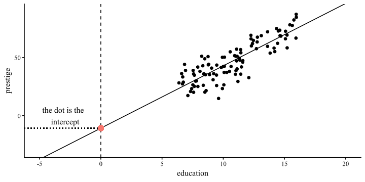
Regression Coefficients: Slope
The slope, \(b_1\), is the “expected change in the \(y\) variable for each 1-unit change in the \(x\) variable”. In our case, \(b_1 = 5.36\). This sounds much harder than it is in practice. Given the equation \[\mathrm{prestige} = -10.73 + 5.36 \times \mathrm{education}\]
We can plug in some values for education and get the predicted value for prestige.
if \(\mathrm{education} = 1\), then \(\mathrm{prestige} = -10.73 + 5.36 \times 1 = -5.37\)
if \(\mathrm{education} = 2\), then \(\mathrm{prestige} = -10.73 + 5.36 \times 2 = -0.01\)
if \(\mathrm{education} = 10\), then \(\mathrm{prestige} = -10.73 + 5.36 \times 10 = 42.87\)
the “1-unit change” part comes from the \(5.36 \times \mathrm{education}\) term in the regression equation.
As you change education by 1, prestige changes by \(5.36\) times that. If you change education by 2-units, then prestige changes by \(10.72\).
Note that the sign of the slope tells you whether two variables are positively or negatively related. As we already saw with the correlation, prestige and education are positively related.
More Slopes Examples
It follows that the sign of the slope determines whether the line trends up (positive slope) or down (negative slope). Here are some examples:
Regression With standardized Variables
Let’s look at what happens when we run a regression with the same variables, but standardized. What is the same and what is different?
Call:
lm(formula = prestige ~ education, data = dat)
Residuals:
Min 1Q Median 3Q Max
-26.0397 -6.5228 0.6611 6.7430 18.1636
Coefficients:
Estimate Std. Error t value Pr(>|t|)
(Intercept) -10.732 3.677 -2.919 0.00434 **
education 5.361 0.332 16.148 < 2e-16 ***
---
Signif. codes: 0 '***' 0.001 '**' 0.01 '*' 0.05 '.' 0.1 ' ' 1
Residual standard error: 9.103 on 100 degrees of freedom
Multiple R-squared: 0.7228, Adjusted R-squared: 0.72
F-statistic: 260.8 on 1 and 100 DF, p-value: < 2.2e-16
Call:
lm(formula = prestige_std ~ education_std, data = dat)
Residuals:
Min 1Q Median 3Q Max
-1.51354 -0.37914 0.03843 0.39193 1.05575
Coefficients:
Estimate Std. Error t value Pr(>|t|)
(Intercept) 9.897e-17 5.239e-02 0.00 1
education_std 8.502e-01 5.265e-02 16.15 <2e-16 ***
---
Signif. codes: 0 '***' 0.001 '**' 0.01 '*' 0.05 '.' 0.1 ' ' 1
Residual standard error: 0.5291 on 100 degrees of freedom
Multiple R-squared: 0.7228, Adjusted R-squared: 0.72
F-statistic: 260.8 on 1 and 100 DF, p-value: < 2.2e-16A Graphical Comparison
Before we look at the difference more closely, the two regressions on the previous slide are equivalent. As you can see, the two plots are indistingushable, save for the names and values of the x and y axes.

Standardized Coefficients: Intercept
Whenever we standardize all the variables in a regression, the intercept will always be 0.
This is because standardizing has the effect of centering the data, and the regression line, at the 0 point.
This is apparent in the graph on the right, where the regression line hits the y-axis at 0 exactly.
Standardized Coefficients: Slope
In the case of a regression with two variables, the standardized regression slope is the correlation coefficient. As a reminder, here are the unstandardized regression coefficient, standardized regression coefficient, and correlation between prestige and education:
Unstandardized regression:
Standardized regression:
Notice that the standardized regression coefficient and and the correlation are both \(0.85\). The unstandardized slope is different given that it’s on the original scale of the variables.
Additionally, I made sure to print the \(t\)-values associated with the 3 statistics above. I want to emphasize that the \(t\)-values are the exact same in all 3 cases 🤔
If the \(t\)-statistic is the same…
To refer back to hypothesis testing, we use test statistics like the \(t\)-statistic to test hypotheses. In the case of regression and correlation, the \(t\)-statistic is always used to ask this question:
Then, if the \(t\)-statistics are the exact same, it means that we are asking the same exact question. In other words, unstandardized, standardized regression coefficients, and correlations are the same.
The true temperature does not change whether we measure it in Fahrenheit or Celsius; similarly, the true relation between two variables does not depend on the numbers we choose to represent those variables. 🧘
It may not click now, but why this point is very important will becomes much clearer when will interpret the magnitude of slopes in some later labs.

Let’s Talk Residuals
At a conference in the Summer of 2025 I met this gentleman on the right 👉
He talked A LOT about how checking residuals is probably the most important thing to do when you run regression models (even more important than checking regression coefficients!). He is probably right 🤷
A residual is the distance between the regression line and a data point. Points with large residuals are not predicted well by a regression, whereas points with small residuals are predicted quite well.


The One Regression Assumption
Mathematically, the regression line represents the mean of the \(y\) variable after finding out about \(x\). Importantly, the residuals are expected to be normally distributed around the regression line at each point of \(x\).
There are many complicated terms relating to regression assumptions, but the only real regression assumption is
You never get something like this in reality. Let’s look at some examples.
Plot Code
# Generate idealized data
set.seed(7757)
# generate X values
education <- rep(seq(min(dat$education), max(dat$education), by =.1), 150)
# the code below generates data according to the regression model
intercept <- coef(reg)[1]
slope <- coef(reg)[2]
residual_var <- sigma(reg)
ideal_data <- rnorm(length(education), mean = intercept + education*slope, sd = sigma(reg))
# plot the idealized data
ggplot(mapping = aes(x = education, y = ideal_data)) +
geom_point(alpha = .2)+
ggtitle("The Data Regression Expects") +
ylab("prestige") +
xlab("education") +
geom_smooth(method = "lm", se = FALSE)
Residuals of prestige ~ education
Given a regression line, every datapoint will have a residual, which represents the distance of the point from the regression line. For any object created with lm() residuals are saved under $residuals.
We want to check that that the residuals are normally distributed around their mean, which is always \(0\), for all values of the \(x\) variable:
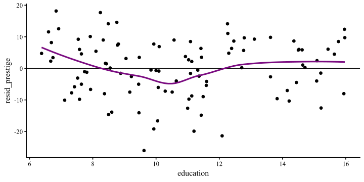
The loess line helps with checking for non-normality. Here, I would say that the residuals are fairly normally distributed around 0 across the range of \(x\) ✅
Residuals of income ~ women
Here, you should notice that although the residuals are fairly normally distributed for profession with \(10\%\) to \(100\%\) women, the residuals are really strange for professions with \(0\%\) women.
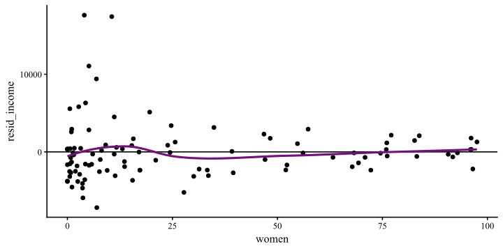
So, the regression does well enough from the 10 to 100 range of \(x\) ✅, but does not do a good job at all at describing income for jobs where there are no women ❌ Also notice that the loess line does not help much in detecting this anomaly.
Normality of residuals: QQplots
Residual plots like the ones on the previous slides are the most informative way of checking that your regression model describes the data reasonably well. Checking the normality is the also good for assumption checks, but can sometimes hide important nuances.
Normality of residuals: Density
Once again, I find density plots more intuitive than QQplots, although they both convey the same type of information.
Implications on Generalizability
The main reason why we collect data and run statistical analyses is to (hopefully) generalize the results to some population.
Call:
lm(formula = income ~ women, data = dat)
Residuals:
Min 1Q Median 3Q Max
-7177.3 -2338.6 -343.1 1019.0 17607.8
Coefficients:
Estimate Std. Error t value Pr(>|t|)
(Intercept) 8508.52 514.73 16.530 < 2e-16 ***
women -59.03 12.01 -4.914 3.49e-06 ***
---
Signif. codes: 0 '***' 0.001 '**' 0.01 '*' 0.05 '.' 0.1 ' ' 1
Residual standard error: 3830 on 100 degrees of freedom
Multiple R-squared: 0.1945, Adjusted R-squared: 0.1865
F-statistic: 24.15 on 1 and 100 DF, p-value: 3.488e-06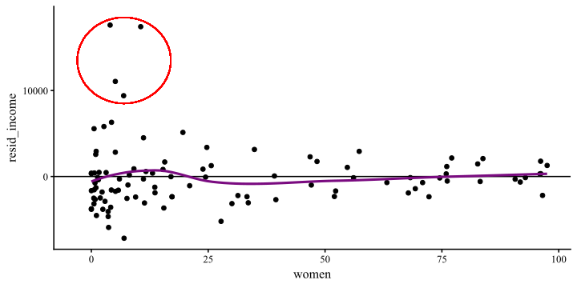
Variance Explained: \(R^2\)
The most common effect size used to evaluate how well a regression overall “fits” the data is \(R^2\), which is often called variance explained. It ranges between 0 and 1, with 1 meaning perfect predictions.
-
\(R^2\) for
prestige ~ education
-
\(R^2\) for
income ~ women
So, education explained \(72\%\) of the variance in presrtige, while women explained \(19\%\) of the varaince in income. For any lm object, the \(R^2\) along fit its significance test is also at the end of the summary() output.
The term “variance explained” does not make much intuitive sense; let’s try to understand where it comes from!
Why “Variance explained”? 🤔
Variance is the part of a variable that is not predictable , or rather, that we cannot predict given the information that we have. Let’s look at the case of the prestige ~ education regression:
Let’s say that the only information we have is the prestige column, our \(y\) variable. Then, a friend says that they are going to take some value from the prestige column at random.
Our job is to pick a number that will be as close as possible to any random value from prestige. What is our best possible guess?
Plot Code
ggplot(dat,
aes(x = prestige - mean(prestige), y = 0)) +
geom_point(shape = 1,
size=6.5) +
annotate("text", y = 0.008, x = 0, label = "These would be the residuals of Prestige, \n if our best guess is the mean", size = 7.5) +
annotate("text", y = - 0.008, x = 0, label = "The variance of these residuals is the exact same as \nthe variance of the original prestige variable", size = 7.5) +
theme(axis.title.y=element_blank(),
axis.text.y=element_blank(),
axis.ticks.y=element_blank(),
axis.line.y = element_blank()) +
ylim(c(-.01, .01)) +
xlab("Residuals of Prestige")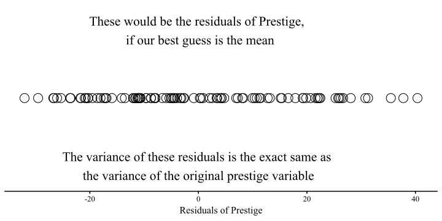
Reducing Variance
Now let’s say that we play the same game, but this time, before our friend tells us the value of prestige that they picked at random, they tell us the education value associated with it, and let us adjust our guess accordingly.
Having learned linear regression, if we know a value of \(x\), we can improve our guess of \(y\)!
The blue dots represent our residuals for the regression prestige ~ education. After finding out about education, we reduced the variance in the residuals by:
\[1 - \frac{82.87}{295.99} = .72\]
This is the \(R^2\) for the prestige ~ education regression. education explained \(72\%\) of the variance in prestige.
Plot Code
ggplot(dat,
aes(x = prestige - mean(prestige), y = 0)) +
geom_point(shape = 1,
size=6.5) +
annotate("text", y = 0.015, x = 0, label = paste("The Original residuals had a \n variance of", round(var(dat$prestige), 2)), size = 7.5)+
geom_point(aes(x = dat$resid_prestige, y = - .03), shape = 1,
size=6.5, col = "blue") +
annotate("text", y = -0.015, x = 0, label = paste("After finding out about education, \n the variance of the residuals becomes", round(sum(dat$resid_prestige^2)/100, 2)), size = 7.5, col = "blue")+
theme(axis.title.y=element_blank(),
axis.text.y=element_blank(),
axis.ticks.y=element_blank(),
axis.line.y = element_blank()) +
ylim(c(-.04, .02)) +
xlab("Residuals of Prestige")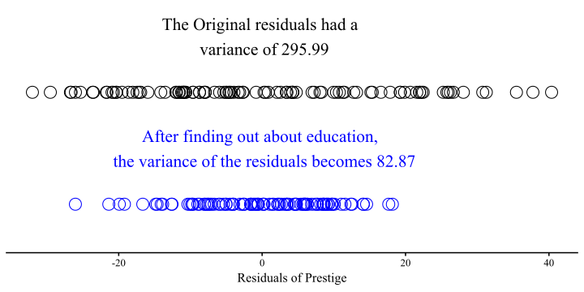
Another visualization
Here is a visualization of our best possible line before and after finding out about education. The concept is the same as before, but visualized in a slightly different way:
The lines is the mean of prestige and is our best guess. You can run a regression with a single variable actually:
The intercept, which is all you get, is the mean of the one variable:
Plot Code
# fit a linear model
fit <- lm(prestige ~ 1, data = dat)
# add fitted values to the data
dat$resid_line <- predict(fit)
ggplot(data = dat, aes(x = education, y = prestige)) +
geom_point() +
geom_hline(yintercept = mean(dat$prestige)) +
geom_segment(aes(xend = education,
yend = resid_line),
linetype = "dotted", color = "red")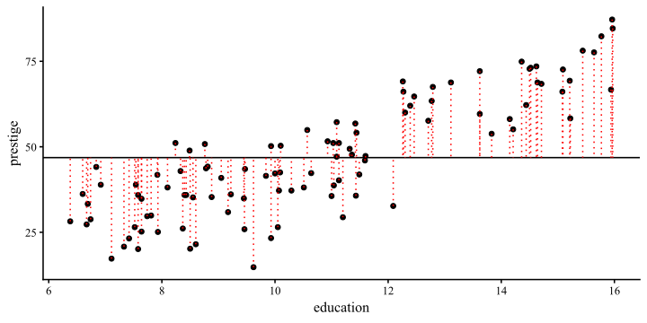
Now that we know about education we can improve our prediction greatly by finding the regression line.
You should see that all the red dotted lines are much shorter on average. That means that the variance of the residuals is much smaller. Once again, this is the variance explained.
Plot Code
library(ggplot2)
# fit a linear model
fit <- lm(prestige ~ education, data = dat)
# add fitted values to the data
dat$resid_line <- predict(fit)
ggplot(data = dat, aes(x = education, y = prestige)) +
geom_point() +
geom_smooth(method = "lm", se = FALSE) +
geom_segment(aes(xend = education,
yend = resid_line),
linetype = "dotted", color = "red")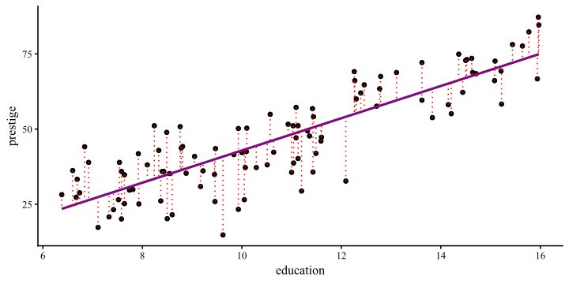
Some APA Style Resources
APA style is something I don’t really want to spend time on. I trust that given some templates you can figure out how to report results in APA style. Here are some resources:
Some guidelines about text formatting when reporting statistics.
Some quick examples about most of the statistical analyses in this course.This is APA 6th edition, but close enough still.
Some ANOVA focused example APA style reports for miscellaneous analyses.
Some APA style examples for regression-like analyses.
Some of these may differ slightly, but any of them is fine in my book.
References
Fox, J., Weisberg, S., & Price, B. (2022). carData: Companion to Applied Regression Data Sets.
Revelle, W. (2024). psychTools: Tools to Accompany the ’psych’ Package for Psychological Research.
PSYC 6802 - Lab 6: Correlation and Regression